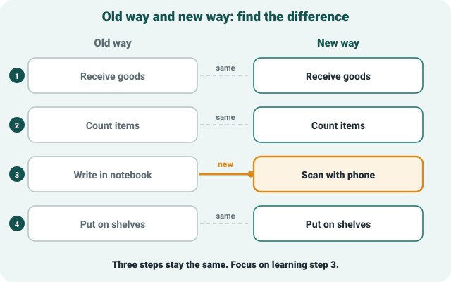

K6 · Adaptability and persistence › Level 2 Starting
When a tool or process changes, get used to it quickly and ask why
How to learn a completely new task on your own is covered in Learn a new task fast (K7). This lesson focuses on the moment when the old way is replaced by a new way. The inner side is covered on tamhonkhoe.com.
1. Objectives
- Get used to a new tool or process in 4 steps, starting by asking why.
- Take feedback, ask about one point, fix it and carry on.
2. Retrieval warm-up
- What are the five warning signs of a scam message?
- What are the three steps for handling a suspicious message?
Answers
- Urgency; asking for secrets; asking for a transfer or new bank details; an address that looks almost right; pretending to be someone you know.
- Stop; check through another channel; tell the right person.
Review: Spot common scam emails and messages.
3. Explanation
Your workplace changes its sales software. The rules for packing orders change. The report template gets a new column. New people often feel annoyed: just as they got used to the old way, they have to learn again.
Changes usually have a reason. Knowing the reason helps you get it right faster, and feel less frustrated.
Four steps to get used to a new way
- Ask why"What problem is the change meant to solve?" Ask to understand, not to object.
- Find what is differentCompared with the old way, which steps change? Which stay the same?
- Try it on low-risk workPractise first with a small order, a regular customer, or sample data.
- Note where you get stuckCollect your questions and ask the person in charge once a day.
Why find what is different? Usually only a few steps change, and most stay the same. When you know exactly what changed, you can focus on learning that part.
Note your questions instead of asking one at a time. When the whole team is learning a new way, the person in charge is very busy. Collecting questions lets them answer many people at once.
Take feedback without stopping your work. While you use a new way, people will correct you often. Some people stop completely when corrected, or argue back. Use 3 steps instead:
1. Listen fully, say thanks 2. Ask about one point 3. Fix it and carry on
For example: "Thanks. So the label goes on the top of the box, not the side, right?" Then fix it at once and carry on.
What if the new way really has a problem? Do not go back to the old way on your own. Write down exactly what happened: which task, when, and the result. Then tell the person in charge. How to describe a problem clearly is covered in Describe a problem and propose two options.
4. Workplace example
Hypothetical scenario. Ryan works in the warehouse of an online homeware shop. From next week, the warehouse moves from a paper notebook to scanning barcodes with a phone.
Ryan does this:
- He asks the warehouse manager: "What problem is the change meant to solve?" She says: to know stock levels accurately, so they never sell items that are out of stock.
- Compared with the old way: receiving goods and counting stay the same. Only the recording step changes: scan instead of write.
- He tries scanning 10 low-value boxes first.
- He notes 2 questions: what to do if a barcode is blurred; how to enter an item with no barcode. He asks her once, at the end of the day.

Why this works: Ryan understands the reason, knows exactly what changed, tries it on low-risk work, and collects his questions.
5. Practice
Hypothetical scenario. You are a waiter in a restaurant. The restaurant moves from paper order slips to entering orders on a tablet. On day one, the manager reminds you: "Choose the table first, then enter the dishes."
Write your 4 steps for getting used to it, and your reply to the manager's feedback.
Hint 1
What is different from the old way: writing by hand or choosing on a screen? What stays the same?
Hint 2
Your reply to feedback: thank them, then ask about one point.
Model answer
- Ask why: "Is the change so the kitchen gets orders faster?"
- What is different: no paper; choose the table and dishes on the screen. Same as before: take the order, read it back.
- Try it first with a regular customer's table or a table with few dishes.
- Note questions: how to change an order if a customer changes their mind. Ask once after the busy period.
Reply to feedback: "Thanks. If a customer moves to another table, what do I do?" Then carry on entering orders.
6. Self-check
Choose an answer. Every option has an explanation.
Question 1. Your workplace changes the report template. Which question should you ask first?
-
Not quite. This sounds like an objection. Ask to understand the reason.
-
Correct. Correct. Knowing the reason helps you get it right faster.
-
Not quite. Guessing makes it easy to use the new template wrongly.
Question 2. Why try a new way on low-risk work first?
-
Correct. Correct. Practising with a small order or sample data lets you learn with little risk.
-
Not quite. The aim is to get used to it gradually, not to avoid it.
-
Not quite. The new way applies to all tasks. Trying small is only the first step.
Question 3. You have 5 questions about the new software. The person in charge is training the whole team. What do you do?
-
Not quite. Scattered questions interrupt the person in charge again and again.
-
Correct. Correct. Collecting questions lets the person in charge answer many people at once.
-
Not quite. Going back to the old way alone can make the team's data inconsistent.
Question 4. While working, you are told: "Label on the top, not the side." What is the best reaction?
-
Not quite. The feedback is about one point. There is no need to stop all your work.
-
Correct. Correct. Listen, thank them, ask if needed, fix it and carry on.
-
Not quite. Arguing wastes time. If you see a real problem, note it and report it later.
Question 5. You find the new way slower than the old way. What should you do?
-
Not quite. Going back on your own leaves the team doing things differently.
-
Correct. Correct. Specific details help the person in charge decide whether to adjust.
-
Not quite. Complaining does not fix the problem. Tell the right person.
7. Reflection
- The last time something changed at school or work, did you know the reason?
- When you get feedback, how do you usually react in the first few seconds?
8. Real-world application
Over the next 7 days, choose a change happening around you: new software, a new rule, a new template. Ask the reason, and write down 2 differences from the old way. When you get feedback, try replying with the 3 steps.
9. Metadata
| skill | K6 · Adaptability and persistence |
|---|---|
| level | Level 2 · Starting |
| group | N2, N3 |
| framework_map | WEF: Resilience, flexibility and agility; SkillsFuture CCS: Adaptability; LifeComp: P2 Flexibility (reference only) |
| original | Vietnamese version |
| updated | 2026-11-14 |
Finish the lesson
Mark it as done and the site suggests reviews after 1, 3 and 7 days. The data stays on your device only.
Suggested reviews: